Esta página no tiene notas.
Noticias desde El Nilo · Gustave Flaubert
A Louis Bouilhet
A bordo de nuestra canga, a 12 leguas más allá de Siena (Asuán), a 13 de marzo de 1850
Dentro de seis o siete horas cruzaremos el trópico de ese viejo tunante de Cáncer1. Ahora mismo hace un calor de 30 grados2 a la sombra: vamos descalzos, en mangas de camisa. Te escribo recostado sobre mi diván, acompañado por el ruido de los tarabuchs de nuestros marineros, que cantan dando palmas. El sol cae a plomo sobre el toldo de nuestra cubierta. El Nilo está plano como un río de acero. Hay grandes palmeras en las orillas. El cielo está completamente azul. ¡Ah, mi querido y viejo amigo, mi amigo del alma!
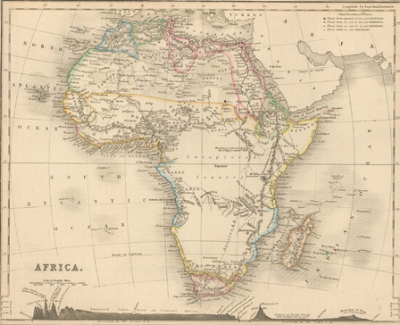
⤢Mapa de África en 1850, editado por el reverendo y astrónomo Thomas Milner a partir de los trabajos del cartógrafo August Petermann (1822-1878).
¿A qué te dedicas, tú, en Ruan? Hace mucho que no recibo cartas tuyas o, mejor dicho, hasta el momento solo he recibido una, con fecha de finales de diciembre y a la cual contesté enseguida. Quizá tenga otra esperándome en El Cairo, o puede que ahora mismo me venga alguna de camino. Mi madre me cuenta que apenas te ve. ¿Y eso por qué? Si eso te resulta demasiado pesado, hazlo un poco por mí e intenta contarme qué ocurre en mi casa, en todos los aspectos posibles. ¿Has estado en París? ¿Has vuelto a casa de Gautier3?, y a Pradier4 ¿lo has visto? ¿En qué quedó el viaje a Inglaterra por el cuento chino? A menudo susurro tus versos, ánimo, viejo picarón. Necesito darte ahora mismo una satisfacción tremenda en relación con la palabra «vagabundo» aplicada al Nilo:
No hay designación más justa, más precisa ni más amplia a la vez. Es un río sorprendente y magnífico, que se parece más a un océano que a otra cosa. Los arenales se extienden hasta perderse de vista en sus orillas, surcados por los vientos como en las playas del mar. Esto tiene tales proporciones que no se sabe por qué lado va la corriente, y a menudo cree estar encerrado en un gran lago. ¡Ah! ¡Ojo! Si estás esperando una carta más o menos cabal, te equivocas. Te advierto muy seriamente que mi inteligencia ha declinado mucho.
En lo referente al trabajo, leo todos los días la Odisea en griego. Desde que surcamos el Nilo he devorado cuatro de sus cantos. Como regresaremos por Grecia, espero que me resulte útil.
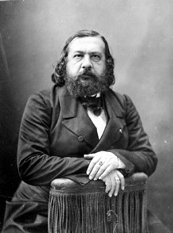
⤢Nadar: Théophile Gautier (ca. 1866).
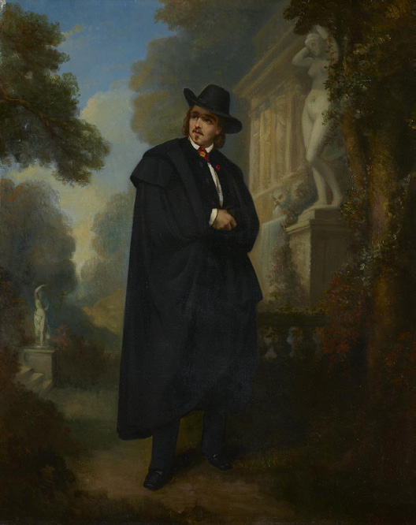
⤢Jean Baptiste Marie Fouque: Retrato de James Pradier (1848).
Los primeros días me puse a escribir un poco, pero, gracias a Dios, enseguida me di cuenta de que era una estupidez. Más vale ser ojo, sin más. Vivimos, como puedes ver, en una pereza embrutecedora. Pasamos los días echados en nuestros divanes, mirando las cosas pasar: desde los camellos y los rebaños de bueyes del Sennar6 hasta las barcas que descienden hacia El Cairo, cargadas de negras7 y de colmillos de elefante. Nos hallamos ahora, muy señor8 mío, en un país en el que las mujeres van desnudas y, se puede decir con el poeta que «desnudas como la palma de la mano», pues, por toda vestimenta, solo llevan anillos. He visto hijas de Nubia con collares de piastras de oro que les llegaban hasta los muslos, y con cinturones de perlas de colores sobre su vientre negro. ¡Y su danza!... Pero vayamos por orden.
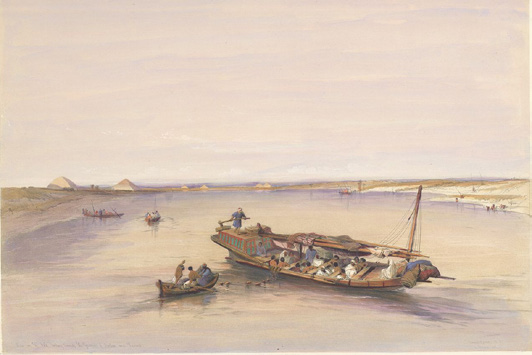
⤢David Roberts: Barco esclavista. Vista del Nilo con las pirámides de Dahshur y Saqqara (1842).
De El Cairo a Beni Suef, nada digno de mención. Tardamos diez días en recorrer esas 25 leguas, por culpa del khamsin o simún que nos retrasó. Nada de lo que se diga sobre él es exagerado. Es una tempestad de arena que te atrapa. Hay que encerrarse y permanecer sereno. Solo nuestras provisiones lo sufrieron mucho; el polvo se cuela por todas partes, entra incluso en los botes de hojalata sellados a presión.
26El sol, en esos días, tiene la apariencia de un disco de plomo; el cielo empalidece; las barcas giran sobre el Nilo como peonzas. No se ve un pájaro, ni una mosca. Al llegar a Beni Suef, hicimos una excursión de cinco días al lago Moeris9. Pero, como no pudimos llegar hasta el final, volveremos allí cuando regresemos a El Cairo.
En Medinet El-Fayum10 nos alojamos en casa de un cristiano de Damasco11 que nos brindó hospitalidad. En su casa se alojaba, como comensal habitual, un sacerdote católico.
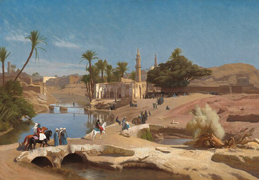
⤢Jean-Léon Gérôme: Vista de Medinet El-Fayum (1868). Capital de la región del Fayum, a 130 km al suroeste de El Cairo.
So pretexto de que los musulmanes no toman vino, estos buenos cristianos se hinchan de aguardiente. Es increíble la cantidad de vasitos de aguardiente que se soplan por confraternidad religiosa. Nuestro anfitrión era un hombre algo letrado, y, como estábamos en el país de san Antonio, hablamos de él, de Arrio, de san Atanasio12, etc. El buen hombre estaba encantado. ¿Sabes qué colgaba de las paredes de la habitación donde dormimos? ¡Un grabado con una vista de Quilleboeuf13, y otro con una de la abadía de Graville14!
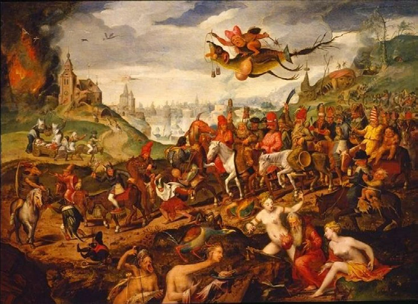
⤢Pieter Brueghel el Joven: Las tentaciones de san Antonio, la pintura que fascinó a Flaubert en Génova en 1845.
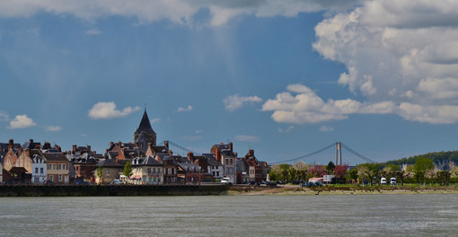
⤢Vista de Quilleboeuf. Población normanda en la orilla del último meandro del Sena.
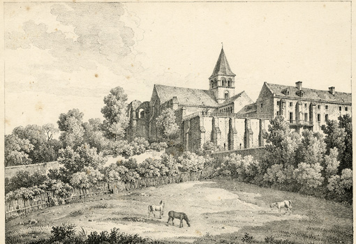
⤢La abadía de Graville, litografía de 1818.
Presenciamos, en una región llamada Djebel El-Teir15, una escena bastante divertida. En lo alto de una montaña que domina el Nilo se encuentra un convento de coptos16. Tienen por costumbre, en cuanto divisan una canga con viajeros, descender de su montaña, tirarse al agua y venir nadando a pedir limosna. Es un asalto en toda regla. Ves a esos valientes bajar las afiladas rocas, completamente desnudos, y nadar hacia ti con todas sus fuerzas gritando a pleno pulmón: «¡Batchis, batchis, cawajda chistiani!»
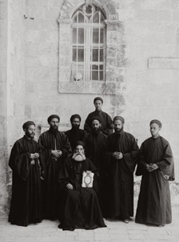
⤢Departamento fotográfico de la colonia americana en Jerusalén: Monjes coptos (1898-1914).
Los buitres y las águilas sobrevuelan tu cabeza, el barco surca el agua con sus dos grandes velas desplegadas. En aquel momento, uno de nuestros tripulantes bailaba desnudo una danza lasciva. Para ahuyentar a los monjes cristianos, les enseñaba su trasero, mientras ellos se aferraban al costado de la canga. Los otros tripulantes les lanzaban insultos. Joseph les pegaba en la cabeza con las tenazas de la cocina. Era un tutti de coscorrones, gritos y risas.
En otros lugares no son los hombres quienes vienen a verte, sino los pájaros. En Sheikh-Shaïd17 hay un santon adonde las aves van por sí mismas a depositar la comida que se les da. Nosotros, que hemos leído a Voltaire, no creemos en esas cosas. ¡Pero aquí están tan atrasados! ¡Cantan tan poco a Béranger18!
29–30(¡Cómo puede ser, señor mío, que no se comience a civilizar un poco estos países! ¿El impulso del ferrocarril no se nota allí? ¿Cuál es allí la situación de la instrucción primaria?, etc.). Tanto es así que cuando se pasa por delante de ese santon, todos los pájaros vuelan alrededor del barco y se posan sobre el aparejo… Les echamos migas de pan, se arremolinan en el aire, engullen lo que les hemos arrojado al agua y se vuelven a marchar.
En Quena hice algo decente y que, espero, obtenga tu aprobación. Habíamos puesto pie a tierra para aprovisionarnos, y caminábamos tranquilamente por los bazares, callejeando sin rumbo, respirando el olor a sándalo que nos envolvía, cuando, de repente, al doblar una esquina, acabamos en el barrio de las fulanas. Imagínate, amigo mío, cinco o seis callejuelas sinuosas con chozas de más o menos 4 pies de altura19, hechas de limo gris desecado. En las puertas había mujeres de pie o sentadas sobre esteras. Las negras llevaban vestidos azul cielo, otras iban de amarillo, de blanco, de rojo, con prendas anchas que ondean con el viento caliente. Súmale aromas de especias, y sobre sus pechos descubiertos largos collares de piastras de oro.
Se acercan, te llaman con voces cautivadoras: «Cawadja, cawadja». Sus dientes blancos relucen bajo los labios rojos y negros, sus ojos de estaño giran como ruedas. Estuve paseándome por aquellos lugares una y otra vez, repartiéndoles batchis a todas. Me abrazaban por la cintura e insistían en arrastrarme adentro de sus casas. ¡Pues bien! Resistí, adrede, por voluntad propia, para conservar la melancolía de esa estampa y hacer que calara en lo más hondo de mí. No hay nada más hermoso que esas mujeres llamándote.
31No siempre me he comportado de acuerdo con este «artisteo» tan estoico: en Esna20 estuve en casa de Ruchiuk-Hanem21, celebérrima cortesana. Cuando llegamos a su casa nos estaba esperando. Su confidente había venido esa mañana a la canga, escoltada por un carnero domesticado moteado de alheña amarilla, con un bozal de terciopelo negro, que la seguía como un perro.
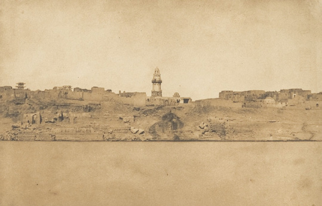
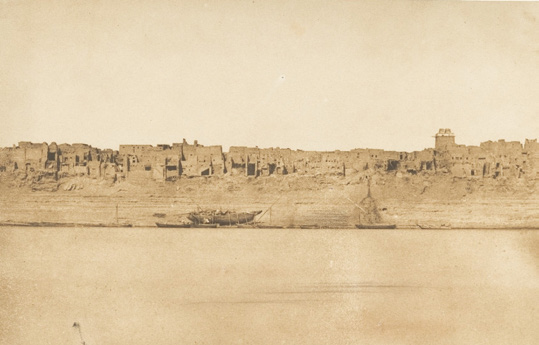
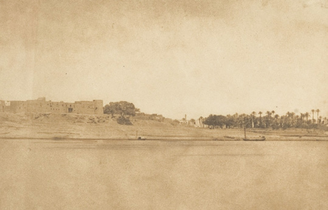
Maxime Du Camp: La ciudad de Esna, la antigua Latopolis, a orillas del Nilo. Serie de tres fotografías.
Ella acababa de salir del baño. Con un gran tarbuch, cuya borla deshilachada le caía sobre sus anchos hombros; la parte inferior de su cuerpo, tapada por unos inmensos pantalones de color rosa; el torso desnudo, cubierto por una gasa violeta, ella se alzaba en lo alto de la escalera, con el sol luciendo a su espalda, y aparecía esplendorosa contra el fondo azul del cielo que la envolvía.
Es una buscona majestuosa, tetuda y carnosa, con la nariz hendida, enormes ojos, magníficas rodillas, y que cuando baila muestra en su vientre unos pliegues de carne de primera. Empezó por perfumarnos las manos con agua de rosas. Hicieron venir a los músicos y hubo danzas22. La suya no vale, ni mucho menos, la del famoso Hassan23, de quien ya te hablé. Sin embargo, resultó bastante agradable. Exceptúo a una nubia que vimos en Asuán24. Pero eso ya no es danza árabe, es algo más salvaje.
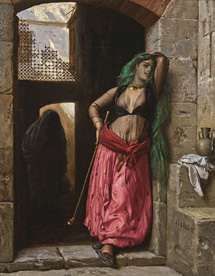
⤢Jean-Léon Gérôme: Muchacha de El Cairo o La almea (1873).
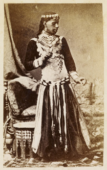
⤢Khawal vistiendo el traje de danza de las ghawazi (ca. 1870).
Por la noche volvimos a casa de Ruchiuk-Hanem. Había cuatro mujeres, bailarinas y cantantes, almeas (la palabra «almea» significa sabia, literata; como quien dice puta, lo que demuestra, señor mío, ¡que en todos los países las mujeres de letras!...). La fiesta duró desde las 6 hasta las 10 y ½, incluidas las cópulas durante los entreactos. Dos hombres que tocaban el rabel, sentados en el suelo, no dejaban de hacer chirriar sus instrumentos. Cuando Ruchiuk se desvistió para bailar, les taparon los ojos con una doblez de sus turbantes, para que no vieran nada. Ese pudor nos desconcertó.
Cuando llegó la hora de irse, no me fui. Ruchiuk apenas se inquietó porque pasáramos la noche con ella. Maxime se quedó solo en un diván, y yo bajé a la planta baja, al dormitorio de Ruchiuk. Una mecha ardía en una lámpara de aspecto antiguo, colgada del muro. En una habitación contigua, los guardas charlaban con la sirvienta, una negra de Abisinia25 que tenía en ambos brazos lacras de la peste. Su perrito dormía sobre una chaqueta de seda.
Su cuerpo estaba cubierto de sudor: estaba cansada después de bailar, tenía frío. La tapé con mi pelliza de piel y se quedó dormida. En cuanto a mí, apenas pegué ojo. Pasé la noche entre infinitas intensidades de ensueño. Contemplando a aquella hermosa criatura dormida, que roncaba con la cabeza apoyada sobre su brazo, pensaba en las noches de placer en París, en un montón de viejos recuerdos… y en ella, en su danza, en su voz que entonaba canciones sin significado ni palabras reconocibles para mí.
34Aquello siguió así toda la noche. A las 3 me levanté para salir a la calle; brillaban las estrellas. Ella se despertó, fue a buscar un brasero y durante una hora estuvo calentándose, acurrucada junto a él, luego volvió a acostarse y se durmió de nuevo.
Nos fuimos por la mañana, a las 7. Salí a cazar, con un marinero, por un campo de algodón, bajo las palmeras y los gazis. La campiña estaba preciosa. Árabes, asnos y búfalos se dirigían a los campos. El viento soplaba entre las finas ramas de los gazis. Aquello producía un silbido parecido al de los juncos. Caminaba arrastrando los pies y pensando en mañanas similares… En una particularmente, en casa del marqués de Pomereu26, en Héron27, después de un baile. No me había acostado y por la mañana me había ido a pasear en barca por el estanque, completamente solo, con mi uniforme de colegial. Los cisnes me miraban pasar y las hojas de los arbustos caían sobre el agua28. Fue pocos días antes de volver a las clases; tenía quince años.
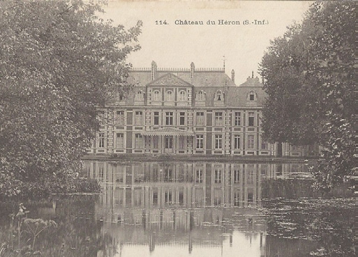
⤢El Château de Héron, propiedad de la familia Pomereu.
En cuanto a la naturaleza, lo mejor que he visto por el momento son los alrededores de Tebas29. A partir de Quena, Egipto pierde su aspecto agrícola y pacífico. Una noche, cerca de Dendera30, paseamos bajo los dums; las montañas eran del color púrpura, el Nilo azul, el cielo azul ultramarino y la vegetación de un verde pálido. Todo estaba inmóvil. Parecía un paisaje pintado. Algunos turcos con turbantes fumaban al pie de los árboles.
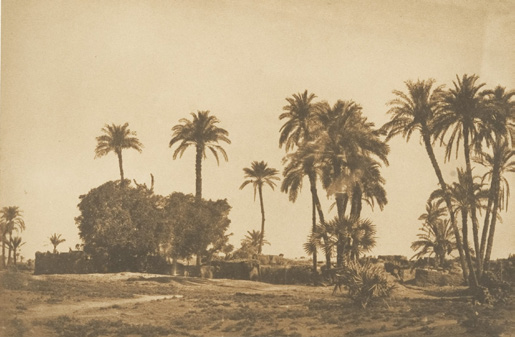
⤢Maxime Du Camp: Vista de la aldea de Hamameh, cerca de Dendera.
Por cierto, hemos visto ya muchos cocodrilos. Se colocan en los bordes de los islotes, como troncos de árboles varados. Cuando alguien se acerca, se sumergen en el agua como grandes babosas grises. Hay también muchas cigüeñas y grandes grullas a orillas del río, que se juntan en largas filas, alineadas como regimientos.
Por lo demás, aquí, en Nubia, la cosa cambia; hay pocos animales. Esto está cada vez más vacío. El Nilo se estrecha entre roquedales; tan ancho como era, ahora está encajonado, en algunos sitios, entre montañas de piedra. Parece estar inmóvil y liso, centelleante bajo el sol.
Anteayer pasamos las cataratas o, mejor dicho, las cataratas de la primera catarata, pues eso es, de por sí, una región. Negros desnudos cruzan el río sobre troncos de palmeras, remando con las manos. Desaparecen entre los torbellinos de espuma más rápidamente que una guedeja de lana negra arrojada a la corriente de un molino31. Luego, el extremo del tronco del árbol se encabrita como un caballo. Reaparecen, llegan hasta nosotros y suben a bordo; el agua chorrea por sus cuerpos lisos como lo hace por las estatuas de bronce de las fuentes.
Describir la forma en que se vencen las cataratas es demasiado largo. Basta con que sepas que un golpe de timón en falso podría partir el barco contra las rocas. Contamos con aproximadamente ciento cincuenta hombres para remolcar nuestra embarcación. Todos juntos tiran de un largo cable al tiempo que lanzan grandes gritos al unísono.
36–37En este momento nos hemos detenido por falta de viento. Las moscas me pican el rostro; el joven32 Du Camp ha ido a hacer unas pruebas. Se le da bastante bien; creo que tendremos un álbum bastante presentable.
Aún no te he recogido piedras del Nilo, de acuerdo con la promesa que te hice, porque el Nilo tiene pocas piedras. Pero he recogido arena. Aunque resulte difícil, no perdemos la esperanza de exportar (expresión comercial) alguna momia.
Escríbeme pues cartas archilargas, envíame lo que quieras, mientras sea en abundancia.
Dentro de un año, por esta época, estaré de vuelta. Volveremos a nuestros buenos domingos en Croisset. Pronto hará cinco meses que me marché. ¡Ah! Pienso en ti a menudo, viejo amigo. Adiós, recibe un fuerte abrazo, que incluye a tus cuadernos.
P.S. – Si quieres saber qué pinta tienen nuestras jetas, tenemos el color de una pipa curada33. Estamos engordando y nos está creciendo la barba. Sasseti va vestido a la egipcia. El otro día, Maxime estuvo entonando canciones de Béranger durante dos horas y pasamos toda la velada, hasta medianoche, maldiciendo a ese sonado. ¡Oye! ¡Está claro que la Chanson des Gueux34 no está hecha para los socialistas; y que debe gustarles más bien poco!
Fin de la Carta VI
37–38Gustave Flaubert
Noticias desde El Nilo
Carta VI · 13 de marzo de 1850